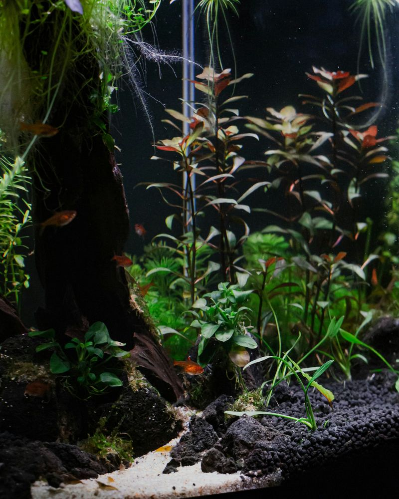
Começar na água doce
Plantados, peixes de cativeiro e camarões
Loja e clube de aquarismo
Peixes de cativeiro, corais, plantas e tudo para montar seu aquário de água doce ou marinho. E um clube para você aprender com quem já mergulhou no hobby.

Plantados, peixes de cativeiro e camarões
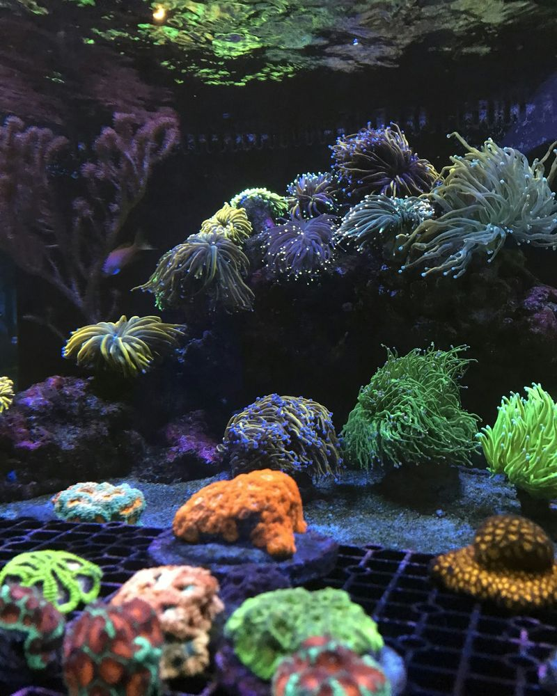
Corais, frags e palhaços de cativeiro
Na loja
Escolha com calma e tire dúvidas antes de levar. A gente ajuda a combinar espécies, tamanho de aquário e equipamento.
Espécies criadas em cativeiro, mais resistentes e já acostumadas a ração. Ideais para quem está começando.
a partir de R$ 9,90
Mudas de coral (frags) de reprodução em aquário, dos corais moles mais tolerantes aos mais exigentes.
a partir de R$ 49,90
Plantas fáceis para o primeiro plantado e opções para quem quer montar um aquapaisagismo caprichado.
a partir de R$ 12,90
Camarões ornamentais que limpam, colorem e dão vida ao aquário plantado. Pergunte quais combinam com seus peixes.
a partir de R$ 14,90
Filtros, aquecedores, iluminação, skimmers e bombas. Indicamos o tamanho certo para o seu aquário.
a partir de R$ 39,90
Alimentos para cada espécie, condicionadores de água e kits de teste para acompanhar seu aquário de perto.
a partir de R$ 19,90
Montamos seu aquário do zero e cuidamos da rotina de manutenção, para você só curtir. Combine pelo WhatsApp.
Sob orçamento
Agendar montagem ou manutenção (abre o WhatsApp)Preços de exemplo. Consulte os valores atualizados pelo WhatsApp.
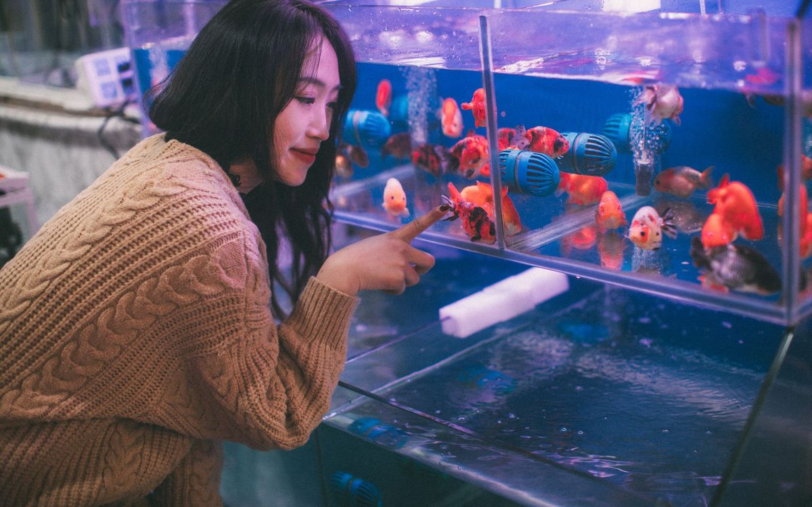
Conte o tamanho do espaço e o que você imagina. Montamos uma lista com o que faz sentido para você, sem empurrar o que não precisa.
Pedir orçamento no WhatsApp (abre o WhatsApp)Escolha seu caminho
Os dois são apaixonantes. A diferença está no custo, no tempo e na margem para erros. Compare e escolha com segurança.
| Critério | Água doce | Marinho |
|---|---|---|
| Custo inicial | Menor | Maior: costuma ficar em torno do dobro ou mais, para o mesmo tamanho |
| Preço dos animais | Muitas espécies populares são baratas | Os peixes costumam custar bem mais |
| Dificuldade | Mais tolerante a erros e oscilações | Exige parâmetros mais estáveis e mais estudo |
| Manutenção semanal | Cerca de 1 a 2 horas, com trocas parciais de água | Cerca de 3 a 5 horas, com mais testes e cuidado com equipamentos |
| Equipamentos extras | Básico: filtro, aquecedor, luz e testes | O básico mais sal marinho, refratômetro, skimmer, bombas e rocha |
| Para quem é | Quem está começando ou quer um plantado | Quem já tem experiência ou topa estudar antes |
Comparação em proporções; valores variam conforme tamanho e equipamento.
Dica de quem vive o hobby: muita gente começa na água doce e migra para o marinho depois de um ou dois anos de experiência.
Todas as espécies abaixo são de cativeiro ou de fornecedores regularizados. Antes de comprar, confirme a compatibilidade com os animais que você já tem.
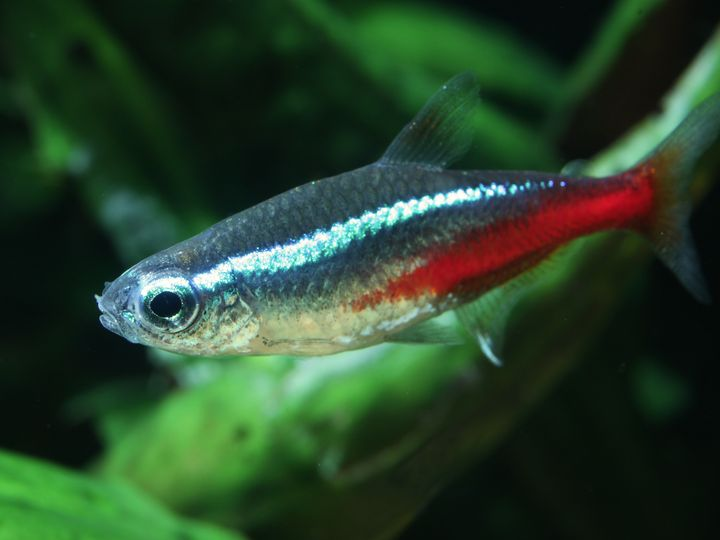
Paracheirodon innesi
Vive em grupo: mantenha em cardume e só coloque em aquário já ciclado.
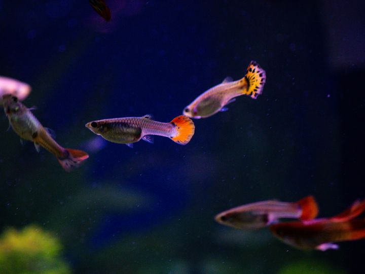
Poecilia reticulata
Reproduz com facilidade. Planeje o espaço para os filhotes ou mantenha só machos.
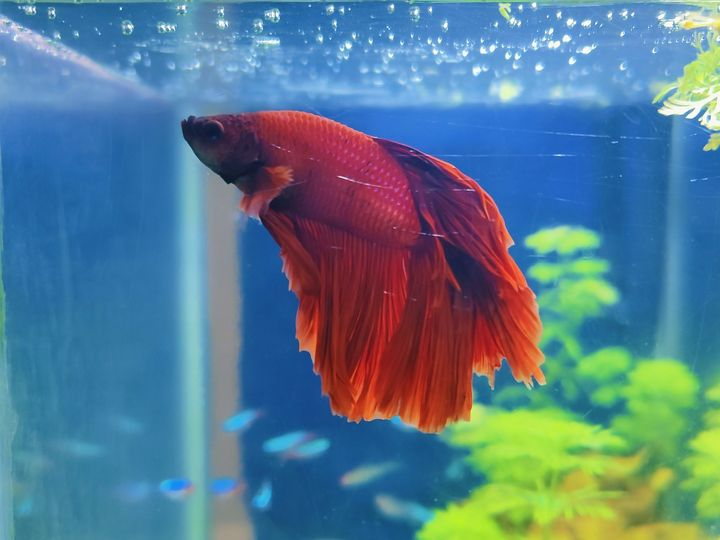
Betta splendens
Os machos brigam entre si. Dê a ele um aquário de verdade, com filtro suave e aquecedor, nunca um copo.
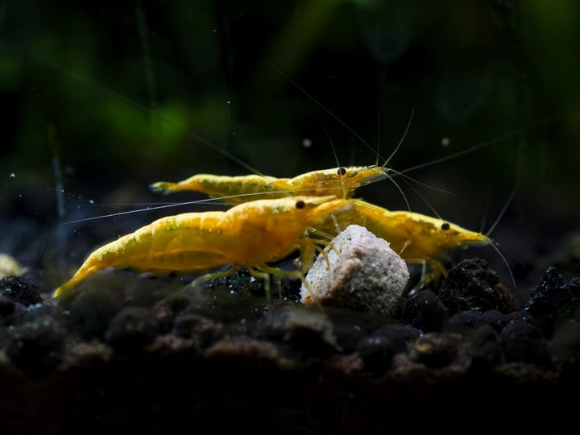
Neocaridina davidi
Tolera bem a água da maioria das casas. Evite peixes grandes, que veem camarão como petisco.
Para o primeiro plantado, comece com plantas que pedem pouca luz e dispensam CO2, como anúbias, samambaia-de-java e musgos.
Plantas na loja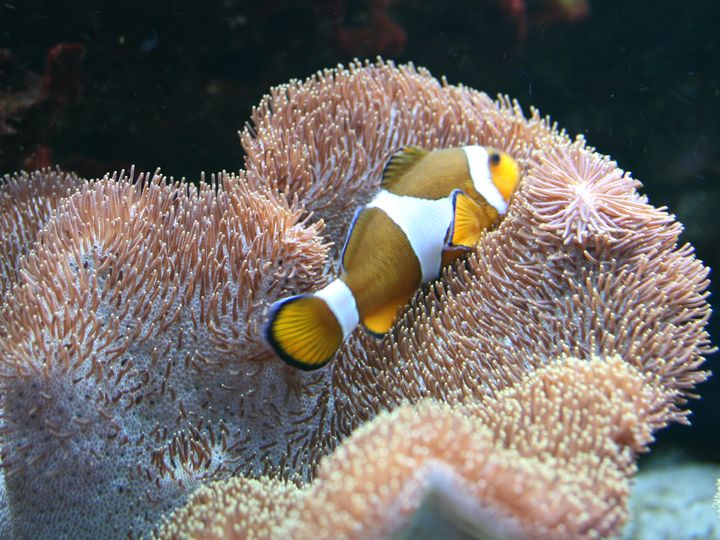
Amphiprion ocellaris
O primeiro peixe marinho clássico: resistente e já come ração. Anêmona não é obrigatória.
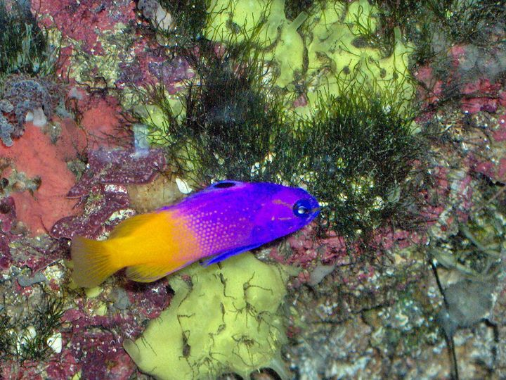
Gramma loreto
Gosta de tocas na rocha para se esconder. Pergunte a origem e prefira exemplares de cativeiro.
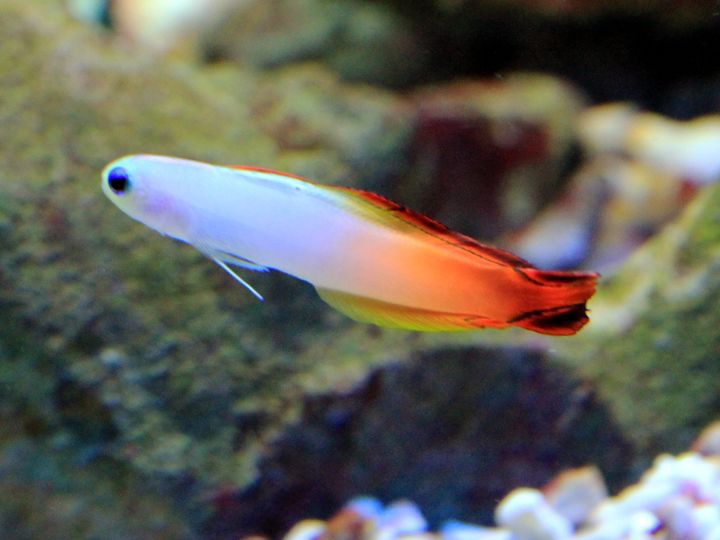
Nemateleotris magnifica (firefish)
Calmo e pequeno, fica perto da rocha. Use tampa no aquário: o firefish pode saltar quando se assusta.
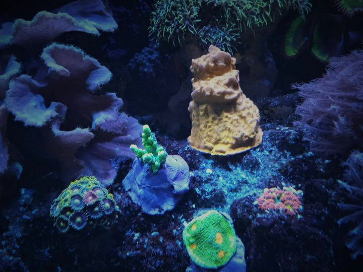
Zoantídeos, cogumelos e Sarcophyton
Os corais mais tolerantes: luz moderada e fluxo suave. Comece por eles depois que o aquário estabilizar.
Primeiros passos
Aquário bom é aquário estável. Siga as etapas na ordem, principalmente a ciclagem, e seus peixes chegam a uma casa pronta para eles.
Doce ou marinho? Quanto maior o volume de água, mais estável o aquário. Escolha um móvel firme, longe do sol direto.
Substrato, rochas ou troncos, filtro, aquecedor e luz. No marinho, prepare a água salgada e meça a densidade.
Use condicionador na água da torneira para neutralizar o cloro e a cloramina, que fazem mal aos peixes e às bactérias.
Essencial
Ciclar é deixar o filtro ser colonizado por bactérias que transformam a amônia, tóxica, em nitrito, também tóxico, e depois em nitrato, bem menos tóxico. Acompanhe com testes. O aquário está pronto quando amônia e nitrito ficam em zero de forma constante e o nitrato começa a aparecer. Isso costuma levar de 3 a 8 semanas.
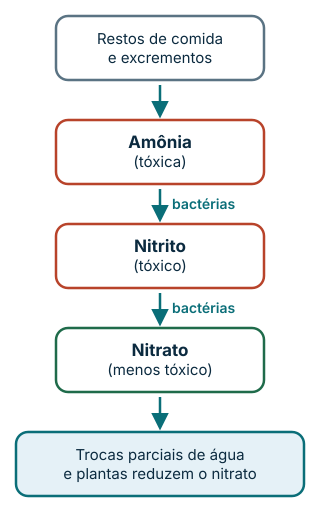
O nitrato não zera: ele é controlado com trocas parciais de água e pelas plantas.
Aclimate devagar e, se puder, faça quarentena em um aquário separado. Assim as bactérias acompanham o aumento de população.
Alimente pouco, teste a água com frequência e faça trocas parciais regulares. Estabilidade vale mais que qualquer número.
Parâmetros da água
Testar a água é como medir a febre: mostra o problema antes de ele aparecer nos peixes. Use a tabela como ponto de partida.
Faixas de referência, não regras. Cada espécie tem suas preferências, e manter a água estável vale mais que perseguir um número exato. No marinho, consulte um especialista antes de corrigir qualquer parâmetro.
| Parâmetro | Faixa de referência | Observação |
|---|---|---|
| Temperatura | 22–27 °C | Muitos aquaristas mantêm entre 24 e 26 °C. Evite variações bruscas. |
| pH | 6,5–7,5 | Atende a maioria das espécies comunitárias. Ciclídeos africanos preferem 7,5–8,5. Só ajuste se a espécie exigir. |
| Amônia | 0 ppm | Qualquer leitura acima de zero pede atenção: troque parte da água e revise a alimentação. |
| Nitrito | 0 ppm | Tóxico. Se aparecer, o filtro biológico ainda não dá conta. |
| Nitrato | O mais baixo possível | As referências variam de menos de 20 a menos de 50 ppm. Controle com trocas parciais e plantas. |
| GH (dureza geral) | 4–10 dGH | Plantados ficam bem perto de 4–8; comunitários, de 6–10. Depende da espécie. |
| KH (dureza de carbonatos) | 2–7 dKH | É o "amortecedor" do pH. Abaixo de 1 dKH, o pH pode cair de repente. |
| Parâmetro | Faixa de referência | Observação |
|---|---|---|
| Temperatura | 24–27 °C | Estabilidade é decisiva, principalmente com corais. |
| Densidade (salinidade) | Recifal: 1,023–1,025 · FOWLR: 1,020–1,025 | Meça com refratômetro ou densímetro. Corrija a evaporação com água doce tratada, não com água salgada. |
| pH | Alcalino e estável | A água do mar é naturalmente alcalina. Mais importante que um número exato é evitar variações bruscas. Traga uma amostra ou fale com a gente no WhatsApp, e ajudamos você a ler o seu teste. |
| Amônia e nitrito | 0 ppm | Os dois são tóxicos. Leitura acima de zero indica ciclagem incompleta ou excesso de comida. |
| Nitrato | Baixo e controlado | O nível ideal muda bastante entre o aquário só de peixes (FOWLR) e o recifal, com corais. Fale com a gente para definir o alvo do seu sistema. |
| Cálcio | 380–450 ppm | Importante no recifal: os corais duros usam cálcio para crescer. |
| Alcalinidade | 7–11 dKH | Muitos aquaristas trabalham entre 7 e 9 dKH. Mudanças devem ser lentas. |
| Magnésio | 1.200–1.400 ppm | Ajuda a manter cálcio e alcalinidade em equilíbrio. |
FOWLR (do inglês Fish Only With Live Rock) é o aquário só de peixes com rocha viva. Recifal é o aquário com corais.
Clube
No Clube Reef Stack você troca experiências, aprende na prática e conhece gente que fala a sua língua, do primeiro neon ao recife cheio de corais.
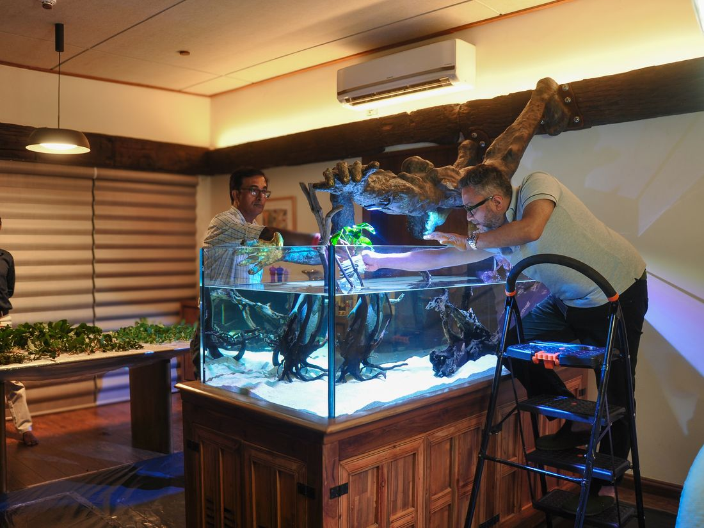
Bate-papo, dúvidas resolvidas na hora e aquaristas de todos os níveis, todo 2º sábado na loja.
Ciclagem, aquapaisagismo, preparo de água salgada: aprenda com a mão na massa. Vagas limitadas.
Leve o excedente do seu aquário e volte com novidades. Só mudas e frags saudáveis, de origem conhecida.
Um grupo no WhatsApp para tirar dúvidas, mostrar seu aquário e saber dos próximos encontros.
Próximo encontro (exemplo)
Sáb., 12/12
14h às 17h, na loja
Tema: troca de mudas e frags de fim de ano
Primeiro encontro gratuito para iniciantes.
Oficina prática: todo 4º sábado, das 10h às 12h. Inscrição pelo WhatsApp.
Responda três perguntas rápidas e fale com a gente pelo WhatsApp.
Nosso compromisso
Cada animal que sai da loja é uma vida que depende de você e da gente. Por isso, estes são os nossos combinados.
Priorizamos peixes, camarões e corais de cativeiro ou aquicultura. São mais resistentes e reduzem a pressão sobre rios e recifes.
Trabalhamos com fornecedores regularizados. Onde quer que você compre, prefira lojas regularizadas e desconfie de espécies nativas raras.
Se uma espécie não combina com o seu aquário, a gente avisa. Tamanho adulto e compatibilidade vêm antes da venda.
Nunca solte peixes, plantas ou água de aquário na natureza. Além de causar danos ambientais, pode configurar crime ambiental.
Não pode mais cuidar? Fale com a gente: o clube ajuda a encontrar um novo lar.
Quem já mergulhou
Exemplo Depoimentos ilustrativos.
"Eu queria colocar os peixes no mesmo dia. Me explicaram a ciclagem com paciência e, um mês depois, meu plantado estava pronto. Ninguém morreu no caminho."
"Passei anos na água doce com medo do marinho. No clube, vi o aquário dos outros membros, tirei dúvidas e comecei com um casal de palhaços de cativeiro."
"Levo mudas de anúbia para a troca e sempre volto com uma planta nova. Virou meu programa favorito do mês."
Dúvidas
O que mais perguntam na loja e nos encontros do clube.
Pelo WhatsApp ou na loja. Conte o que procura e o tamanho do seu aquário; a gente confirma disponibilidade, valores e a melhor forma de levar.
Sim, em regiões combinadas pelo WhatsApp. Peixes e corais viajam embalados para a viagem, então a entrega é agendada.
Sim. Montamos do zero e cuidamos da rotina de manutenção. Peça um orçamento pelo WhatsApp com o tamanho e o tipo do aquário.
Não. O aquário precisa passar pela ciclagem, que costuma levar de 3 a 8 semanas. Sem ela, a amônia se acumula e os peixes adoecem.
Para a maioria das pessoas, água doce: custa menos e tolera mais erros. Prefira um volume médio, que é mais estável que um aquário muito pequeno.
Há um encontro mensal na loja, oficinas práticas e um grupo no WhatsApp. O primeiro encontro é gratuito para iniciantes. As condições para continuar você confere pelo WhatsApp.
Mudas de plantas e frags de corais saudáveis, de origem conhecida e sem pragas visíveis. Animais e espécies de procedência duvidosa ficam de fora.
Nunca solte os animais nem despeje a água na natureza. Fale com a gente: o clube ajuda a encontrar um novo lar com outro aquarista.
É o erro número um e tem até nome: síndrome do aquário novo. Espere amônia e nitrito ficarem em zero de forma constante.
O filtro biológico não acompanha o salto de população. Adicione poucos peixes por vez e respeite o tamanho adulto de cada espécie.
A sobra apodrece, sobe a amônia e o nitrato e deixa a água turva e cheia de algas. Ofereça só o que os peixes comem em poucos minutos.
O hobby recomenda de 21 a 28 dias em um aquário separado para recém-chegados. A quarentena da loja ajuda, mas não substitui a de casa.
Mudança brusca de água estressa o peixe. Aclimate devagar na chegada e mantenha trocas parciais regulares, mesmo com a água parecendo limpa.
Aquele peixe lindo pode crescer demais ou brigar com os outros. Pesquise o tamanho adulto e a compatibilidade antes, ou pergunte na loja.
Corrigir o pH a toda hora causa oscilação, que faz mais mal que um valor fora do "ideal". Só ajuste se a espécie realmente exigir.
No marinho, pular etapas sai caro. Cicle com calma, comece pelos peixes e corais mais tolerantes e aumente aos poucos.
Não achou sua dúvida?
Perguntar no WhatsApp (abre o WhatsApp)Visite a loja
Nada substitui ver os peixes nadando. Passe na loja, tire dúvidas com calma e conheça o espaço do clube.
Dados de exemplo
Rua Exemplo, s/n, Bairro Exemplo, São Paulo – SP, CEP 00000-000
Não fechamos para almoço. O WhatsApp atende no horário da loja.
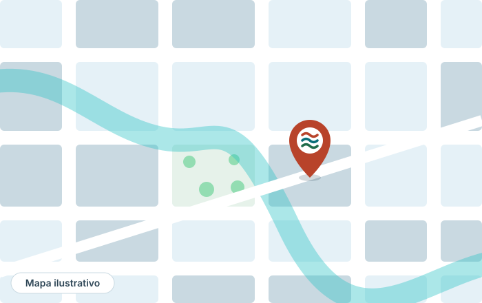
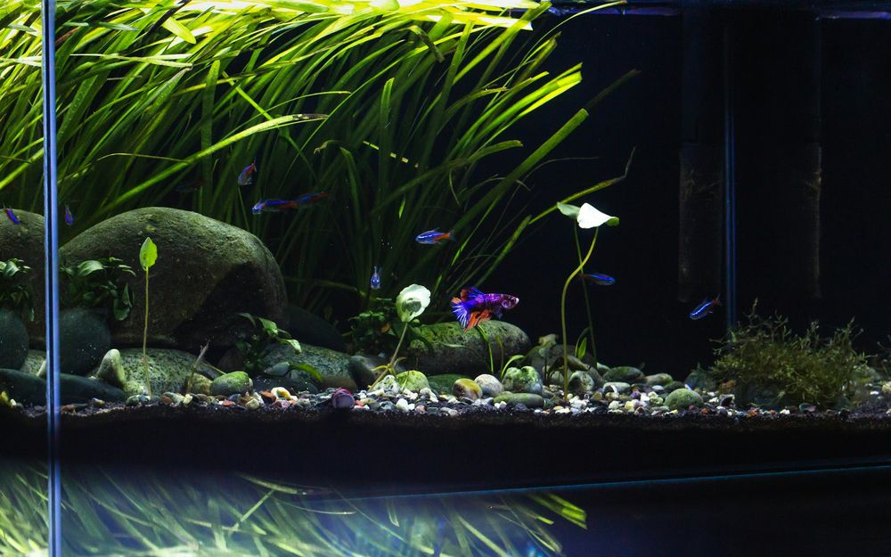